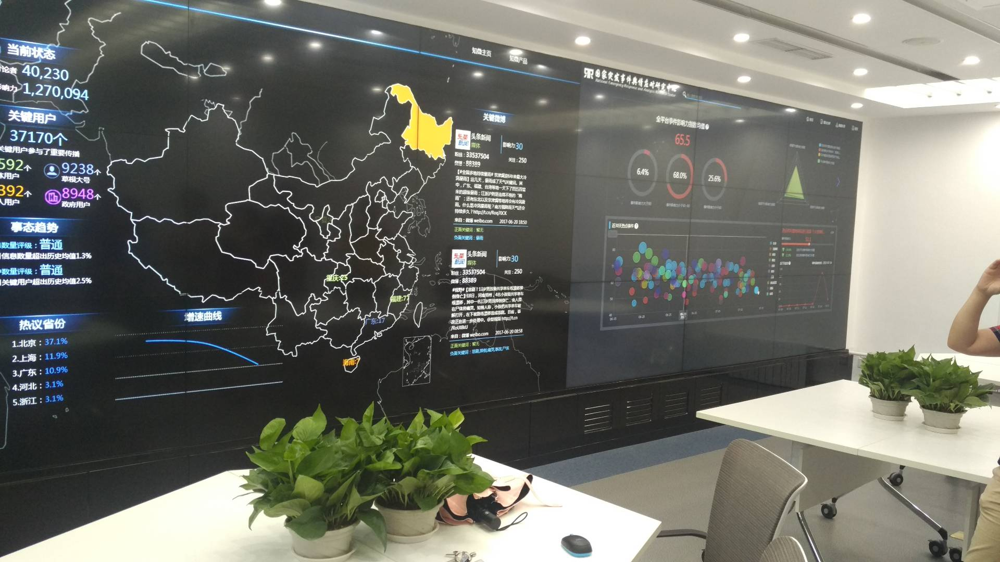

初
从北京回来后，已在家懒散了近一日半，才终于想起此前自己曾设想记录回忆的目标。
恐怕再想不起来这一茬，就也如往常发生过的诸多事情一般被时光逐渐埋没掉了吧。
距离上次记日记什么的，都已经不知过去了多久。半年到一年大概是有的 =w=
每次总想着发生些什么重要的事情就记录下来，每次却总是作罢。而时间一过，便更是回忆不起来了。
难得自己动手搭了博客，有些东西方便起见的话便直接在这边记录吧。怕是现在打开日记本，连字都不会写了。
因为父母强烈要求我考研，加之自己也想再混吃混喝几年，所以今后读研应当是免不了的。
当然是不出意外的话，在高考英语成绩出来之前，我也一度曾以为自己去南航当飞行员是免不了的事情。
（然而事实证明，这世间并没有什么绝对的事情。）
爸妈希望的是我考研的话最好是去南京师范大学又或是苏州大学，毕竟当初高考填报志愿的时候没有在意 211、985 的事情，没有优先考虑这些院校，虽然有填报，却放在了第一志愿之后。
最后来到了某既非 985 ，亦非 211 的上海某不知名一本院校 - （上海海事大学）。
（此刻还藏着对江苏的高考制度有着深刻的怨念，为什么物理化学不算总分呢？就算有 A+ ，也是在决定录取时毫无作用的等第）
虽说起初有些愤懑不甘，但几年下来的人和事早已改变了我的想法。
前段时间，在空间里看到这样一句话。这本是送给高考失利的学子们的，但看到的瞬间，便仿佛抵到了我胸口里不知名的东西。
未来你会遇到许多的人和事
会让你觉得
高考做错的那些题
都错得刚刚好
是的，如果当初高考时英语听力没有恰好卡带，如果当初我赶得及做完最后一篇阅读理解，如果我当初英语多考了两分（高考英语大概是高中生涯有史以来最低分），
如果南航那年没有提高英语分数线并对英语作出特殊要求，那么我大概就会成功进入南航，老老实实读书训练并最终成为某公司的一名飞行员。
也许我会遇到其他美好的人和事，但反之我和现在所有经历相遇过的人和事可能一辈子都不会再有交集。
我或许不会遇到能够互相骂嘻嘻叫着儿子的室友，不会加入某个能怀念一生的社团，也不会再傻傻地背着书包电脑，坐着回六个小时的地铁公交去上理辅修。
甚至根本没可能再在电脑前敲着这样的文字，并发到自己的网站上吧。
大概是五六月份我在中传的研招网上刷到了夏令营的通知，我已经差不多忘了当时为什么要打开网站了。（好像是在b站上看了中传动画学院的毕业展？）
或者说其实很早以前就想要考研考中传了吧？打从辅修动画开始。
到了大二的时候，南航招飞可以再去一次。只要四级过了，身体体检再没问题，就可以转校去南航继续训练当飞行员了。
那时候四级已经过了，便和爸妈商量着要不要再去体检一次。
爸爸还特地从家里过来陪了我一趟。巧的是，第一次上海招生集合地点就在我辅修的学校——上海理工大学。
体检地点则和以前高中一样，上海民航医院。就连负责的南航招生事宜的老师也仍旧是那俩人（挺凶的就是了）。
体检是两天，第一天是各种外科视力检查，第二天是各种仪器脑电图、抽血化验什么的。
不知怎么，各项体检等待的过程中就像是有着莫大的压力。但基本上第一天通过了，第二天就不会有什么问题了。
所以第一天通过后的晚上，我和老爸待在宾馆的床上讨论起来。明天到底要不要继续体检？
现在回想起来，这差不多也是决定我人生方向的重大决定时刻吧。讨论了许久，差不多夜都深了，方得出结论，放弃招飞日后读研。
我想我觉得自己有点舍不得学了一年多的计算机和半年的辅修了，还有在一起共处了一年多的室友们。
我问自己，真的想当飞行员吗？无非是冲着飞行员的高薪与福利罢了。
学些自己喜欢的做些喜欢的事情不是更好吗？思前想后，我决定放弃。
算是对过往怨念的告别吧，这次不是它因为英语分数拒绝了我，而是我拒绝了它。（聊以自慰）
这样无论多久的以后我都可以说，这是属于我自己的选择。
大概从那时起，便有了报中传的打算。当然父母还是更希望我考南京师范大学，但还算尊重我的意愿。
如果能考上的话就上，否则，来年再战便必须选南师大或者苏大。（这是我和父母的赌注，稍微有点破釜沉舟的感觉吧 未曾想日后却食言了）
仿佛离题扯的太远了，总之阴差阳错地我报了中国传媒大学的夏令营，专业是计算机应用技术学硕数字娱乐与动画方向。
同时也是中国传媒大学第一次举办的夏令营。再联系到自己的专业与辅修，甚至有种为我量身打造之感。（自我意识稍微有点过剩）
2017 年 7 月 6 日晚，我收到了入营通知。
在此之前，总是担心自己怕是连初选都过不了吧。
= =，顺带一提，邮箱因为想装逼用的域名邮箱 me@yunyoujun.cn ，但是因为当时正在备案以及解析的种种原因导致只能发出而收不到邮箱，还是后来自己无聊瞎测试才发现的。
等到 7 月 5 日域名备案成功，自己7月6日下午调了其他解析才终于解决问题。（5日才发现，6日才解决。）
此后一个小时左右，便收到了通知入营的邮件。那时感觉自己六月份的域名备案哪怕迟一天，或者问题发现与解决迟一个小时，就可能错过回复的邮件了，而以为自己根本没有通过了。
直到那时，我才发现世间的仅仅一件事便存在着那么多的巧合。
中
收到入营通知后，正坐在沙发上的我便告知了一旁的父母。
虽然嘴上没说，但我感觉到他们其实挺高兴的，还叮嘱我一定要准备好各种材料物件。
我则将之前的申请材料拿给他们过目一番。他们将我准备的申请材料、自我陈述以及各种证书奖状来回地翻看。
当我准备收起来的时候，还阻止了我。老爸将材料装起袋，对我表示还要再拿给外公瞧瞧，让他高兴高兴。（外公住在家里另外一处房子，并不算远）
那时我想，只是个入营通知而已，连起决定性作用的优秀营员都没拿到，万一到时还是一场空，岂不又是白高兴一场吗？
简直就像当初飞行员一样。
那时最失望的恐怕不是我，而是他们吧。
晚上，爸又过来和我讨论问要不要他陪我去。
夏令营通知文件上写的是提供吃住和报销单程车票，时间则是三天（7.14-7.16），第一天只有下午报到。
我想不管怎么看，肯定是我自己一个人去更方便吧，反正有吃有住，什么都不用担心。
我便说我一个人去就行。老爸则仍旧再三问我要不要他陪。
大概是怕我又像上次甘肃支教回来时，丢了手机又上不了回家火车什么的吧。我则一再地回他不用。
最后，老爸大腿一拍，决绝道：我陪你去吧！
我：……
接下来的日子里就是准备复习了，因为看通知上要有外语和专业水平测试什么的。
想着赶紧复习点知识吧，当初甚至害怕还会考到高数，但因为时间问题和心存侥幸干脆就放弃复习数学了。
虽然专业知识也基本没能复习什么，最多就写了中英文自我介绍，和猜测会问到的英语问题答案。（然而最后并没有用到多少）
时间从来都跑得很快，7 月 13 日，我和爸收拾起行李坐上了去北京的火车。（18:05 - 08:16）
宾馆是预先定好了，到了便直奔宾馆，顺带最后看点书给自己点心里安慰。（虽然基本没用上就是了）
老爸则是一路陪我去报到，直到我找到学校提供的住宿住下。
校园并不算大，大概只有自己母校的1/2到1/3。寝室在21号楼，他们称作老国交（国际交流中心）。
吃饭是提供了有六十元的饭卡，住所则有点宾馆标准双人间的感觉吧，但是没有 wifi。
室友是河南大学的，也是河南人，比较健谈，感觉蛮厉害的，加了好友后，发现原来是个高龄死宅。（2333）
日程安排是 15 日上午集合听学院教授们的专业介绍，下午则参观实验室。16 日上午面试什么的，下午就可以回家啦。
介绍内容大抵千篇一律，主要内容自然是介绍其具传媒特色的计算机专业。
下午的实验室参观也大抵如此。不过倒是看到了一个名为“国家突发事件舆情应对研究中心”，针对网络媒体的信息抓取分析舆情的东西。
看着很是高大上，甚至仿佛嗅到了阴谋的气息。

总之，环境感觉都还不错，虽然和预估的有些偏差，但是还是很希望自己能够来这里读研下去的吧。
16 日便是面试了，出乎意料地简单。（本以为还有笔试什么的，英语自我介绍也免了）
先是自我介绍，然后是为几个专业问题和英语问题，自己基本就是听着几个词就开始口胡过去了。（完全不知结果如何）
此后还报销了卧铺车票(本以为只能报销硬座车票什么的)，让我的好感度再次飙升。不考虑老爸那边的话，来这里基本就没什么支出。日程结束后，就和在这附近宾馆住了两天的爸爸汇合了。
感觉自己的记叙已经完全流水账了，但也是没办法的吧。（大概）
此后，便决定去天安门、故宫看看吧。庞大的人群数量勉强还在预料之中，天气也是热得异常。
（想起前几天刚看到新闻，某非洲小哥来北京避暑反而中暑，对热的心理感受作用便更深一层。）
故宫成人票价是60元，带了学生证的话就是20元。（大概真的是想不到什么可以记叙的了……）
总而言之，天安门挺大的，故宫也很大，天气非常热，还是抓紧回家吧！
在北京火车站三点多开始等六点半发车的火车，此后凌晨一点多还要转辆火车，而且都是硬座。（大概这就是买票太迟的罪孽吧！）
一路基本没有睡好，到了家乡的火车站仍旧要坐几个小时的公交才到家，那时我就想我还是当一辈子的宅比较好。
九点左右，回家倒头便睡，午后两点才醒得有点知觉。这一事件就算终于告一段落了吧，不知还要懒散几天才能恢复常态。（啊，常态好像也是懒散的！）
至于自己优秀营员能不能拿到还要另说。但是就算没有的话，我也会努力考到这所学校的吧。因为，这大概是我仅存的可以堂而皇之的声称自己想要实现梦想并聊以自慰的地方。）
末
2017-07-28
今天，或者说是昨天中传的夏令营通知终于下来了。
所幸看到了自己的名字，考核成绩 97 分，算是同专业方向里最高的了，稍微有点沾沾自喜。
接下来就但愿保研或者考研能够通过吧。